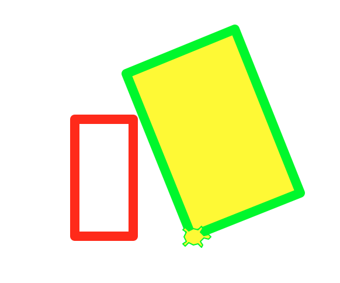
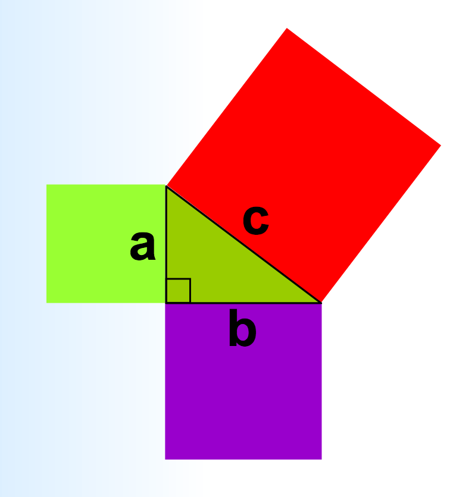
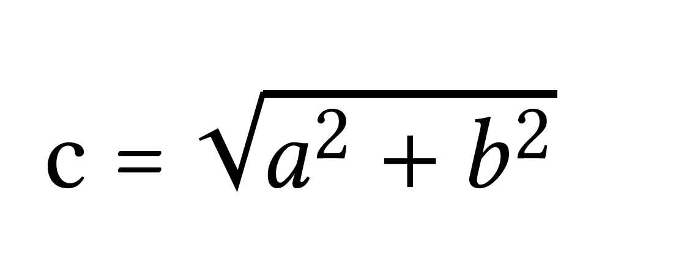

lab03 : Turtle Graphics: Basic shapes
| num | ready? | description | assigned | due |
|---|---|---|---|---|
| lab03 | true | Turtle Graphics: Basic shapes | Tue 10/17 08:00AM | Tue 10/24 05:00PM |
Goal
The goal of this exercise is to practice with Turtle Graphics in Python by producing somewhere between three and six Python functions that use Turtle Graphics to make particular shapes.
(You’ll understand the reasons its “between three and six” in a minute.)
What you’ll be drawing
You’ll be writing functions to produce two basic shapes: a rectangle and a triangle. Each function takes parameters that specify the size, pen color, and fill color of that shape. The drawRectangle function additionally allows us to specifiy the tilt of the rectangle relative to the x-axis in degrees. The function definitions are given below:
drawRectangle(width, height, tilt, penColor, fillColor)drawTriangle(base, height, penColor, fillColor)
The output produced when each function is callled with specific parameter values is shown in the following figure.

The above drawings are the result of calling either drawRectangle() or drawTriangle(). In each drawing, the turtle stamp shows the initial location and heading of the turtle right before the corresponding function is called. For example the top left drawing is the output of the following line of code, when the turtle is at the top left corner:
drawRectangle( width = 50, height = 100, tilt = 0, penColor = "red", fillColor = "")
The subsequent three drawings on the same row are the output of repeatedly moving the turtle to the right, and calling the drawRectangle() function changing the tilt, penColor and fillColor. The function calls and parameter values to produce these drawings are given below:
drawRectangle( width = 50, height = 100, tilt = 20, penColor = "green", fillColor = "yellow")
...
drawRectangle( width = 50, height = 100, tilt = 60, penColor = "blue", fillColor = "blue")
...
drawRectangle( width = 50, height = 100, tilt = 90, penColor = "red", fillColor = "red")
Similarly, the drawings on the next row are the result of repeatedly calling drawTriangle() with the following parameter values:
base |
height |
penColor |
fillColor |
|---|---|---|---|
| 50 | 100 | "red" |
"" |
| 50 | 100/2 | "green" |
"yellow" |
| 50 | 100/4 | "red" |
"red" |
| 50 | 100/8 | "blue" |
"blue" |
In Project 1, we will use these functions to create more interesting drawings.
The programming part
Step 1: Create a lab03 directory under your cs8 directory
Create a directory called ~/cs8/lab03 for a file
we are going to call lab03.py.
To do that, use the commands below.
(Just like last week, your prompt may not be exactly like the one shown here. Instead of -bash-4.2$ , you might have something like [cgaucho@cstl-15 ~]$ . The cgaucho here is your username, the cstl-15 is where you are logged in, and the ~ is your current directory. Don’t be distracted by this detail.)
-bash-4.2$ cd -bash-4.2$ pwd /cs/student/yourusername -bash-4.2$ cd cs8 -bash-4.2$ pwd /cs/student/yourusername/cs8 -bash-4.2$ mkdir lab03 -bash-4.2$ cd lab03 -bash-4.2$ pwd /cs/student/yourusername/cs8/lab03 -bash-4.2$
Step 2: Open idle3 and create lab03.py
Open up idle3 and select the menu option File => New File to create a new file.
In this file, put this code (but put your name instead of “your name goes here”)
# lab03.py, your name goes here
import turtle
t = turtle.Turtle()
You can name your turtle anything you like; I used t because it’s short to type.
Optionally, you can make your turtle look like a turtle by typing this:
t.shape("turtle")
And you can set your turtle to move at the fastest possible speed on the screen - which will help make your drawings as quickly as possible.
t.speed(0)
Also, you can change the pen width to make your drawings look more prominent
t.width(4)
Save this, and run it. You should see a turtle appear. The turtle is not moving because we haven’t given it instructions to move.
Step 3: Create a function for drawing a rectangle
Next, you are going to define a function to draw a rectangle. Your final function will be names drawRectangle() but before you implement that, we will implement a couple of different versions of that function with simpler specifications.
Below is the first version of the function. It doesn’t take any parameters, instead it draws a rectangle with a fixed width (50), a fixed height (100), a fixed orientation (0 degrees with respect to the x-axis). To write the code we should first come up with a plan, a sequence of steps or algorithm (CS speak). Here is a very simple algorithm: Orient the turtle to point right at 0 degrees with respect to the x-axis. Move the turtle forward by 50 units, turn the turtle left by 90 degrees, move the turtle forward by 100 units, turn left 90 degrees, move forward by 50 units, turn left by 90, move forward by 100…(we are repeating ourselves, but that’s fine for now. In later labs we will express the same algorithm in a more concise way). Here is the code that does what we just described:
def drawRectangle_1():
"""
draw a rectangle with width 50 and height 100. Use a turtle called t to create the drawing
"""
t.seth(0) # Set the initial orientation of the turtle to 0 degrees
t.forward(50) # Move the turtle forward by 50 units in the direction that it was pointing
t.left(90) # Turn the turtle left by 90 degrees relative to the direction it was pointing
t.forward(100) # Move the turtle forward by 100 units
t.left(90)
t.forward(50)
t.left(90)
t.forward(100)
t.left(90) # Make sure the turtle is oriented back to its initial orientation
Put this code right after the code you wrote earlier in the lab03.py file. After entering the function definition, at the bottom try a sample
function call (drawRectangle_1()). The
function call should NOT be indented, just as shown in the example below.
Try running it and see if the rectangle looks ok. Change the first line: t.seth(0) to t.seth(90). Save and run your code again. What changed?
We will now update our drawRectangle_1() to draw a rectangle with a green boundary and yellow interior. To do that, write the following statement before the very first line in the body of the function:
t.color("green", "yellow") # Sets the pen color to green and fill color to yellow
The first parameter is the pen color and the second is the fill color. To actually fill the rectangle with the specified color, you must precede the code that draws the rectangle with t.begin_fill() and follow it with t.end_fill(). Below is the complete code. Save and run it.
def drawRectangle_1():
"""
draw a rectangle with width 50, height 100, tilt 0, pen color green and fill color yellow. Use a turtle called t to create the drawing
"""
t.color("green", "yellow")
t.seth(0) # Set the initial orientation of the turtle to 0 degrees
t.begin_fill()
t.forward(50) # Move the turtle forward by 50 units in the direction that it was pointing
t.left(90) # Turn the turtle left by 90 degrees relative to the direction it was pointing
t.forward(100) # Move the turtle forward by 100 units
t.left(90)
t.forward(50)
t.left(90)
t.forward(100)
t.left(90) # Make sure the turtle is oriented back to its initial orientation
t.end_fill()
Save and run it. Then call the function from the Python shell as follows:
>>> drawRectangle_1()
This is just one possible solution. As you continue through this course, you will soon discover that there are many different ways to solve any problem. Computer Scientists almost always care about correct solutions that run the fastest on any computer - in fact there is a whole field within CS dedicated to finding such solutions - its the field of algorithms. Good programmers take a lot of care to express their algorithms in code in the simplest and most understandable way. We will strive towards this goal in general. For now, our goal is to come up with correct solutions.
Below is an alternate implementation for drawing a rectangle. The algorithm is slightly different: It first computes the absolute location of the 4 corners of the rectangle and then commands the turtle to go to the four locations in a specific order. To move the turtle to any location (x,y), we will use a new turtle method: t.goto(x, y). Here is one possible implementation of this algorithm. Name this function: drawRectangle_2. Place it below the code for drawRectangle_1().
def drawRectangle_2():
"""
draw a rectangle with width 50, height 100, tilt 0, pen color green and fill color yellow . Use a turtle called t to create the drawing
"""
# Calculate the coordinates for the four corners of the rectangle
x1 = t.xcor()
y1 = t.ycor()
x2 = x1 + 50
y2 = y1
x3 = x2
y3 = y2 + 100
x4 = x1
y4 = y1 + 100
t.color("green", "yellow") # set the pen and fill colors
t.begin_fill()
# Command the turtle to visit the four corners in order
t.goto(x2, y2)
t.goto(x3, y3)
t.goto(x4, y4)
t.goto(x1, y1)
t.end_fill()
Save and run it. Then call the function from the Python shell as follows:
>>> drawRectangle_2()
You should see an identical rectangle as the one drawn by drawRectangle_1().
Here is yet another implementation for the same algorithm used in drawRectangle_2() (You guessed correctly - a single algorithm can be implemented in different ways in code)
def drawRectangle_3():
"""
draw a rectangle with width 50, height 100, tilt 0, pen color green and fill color yellow . Use a turtle called t to create the drawing
"""
# Calculate the coordinates for the four corners of the rectangle
x1 = t.xcor()
y1 = t.ycor()
fourCorners = [(x1 + 50, y1), (x1 + 50, y1 + 100), (x1, y1 + 100), (x1, y1)]
t.color("green", "yellow")
t.begin_fill()
t.goto(fourCorners[0][0], fourCorners[0][1])
t.goto(fourCorners[1][0], fourCorners[1][1])
t.goto(fourCorners[2][0], fourCorners[2][1])
t.goto(fourCorners[3][0], fourCorners[3][1])
t.end_fill()
The main difference between this version and the previous one is that we are expressing the coordinates for the four corners of the rectangle as a list of tuples. If you don’t understand the syntax, its because we haven’t covered it in class yet. Don’t worry about it, just save and run and call this function to see that it produces the same exact result as the other two.
Refer to the turtle documentation to understand all the commands we have used so far and possible alternatives to them (like t.goto())
Step 4: Implement a drawRectangle() function that is reusable
Now, we want to make sure that we implement a function for drawing a rectangle that is general enough:
- at different heights, widths and orientation
- with different pen and fill color
What you need to do is to write the final version of this function that takes 5 parameters as shown below:
def drawRectangle(width, height, tilt, penColor, fillColor):
"""
draw a rectangle with a given width, height, penColor and fillColor,
with the current location of the turtle being the
lower left corner, and the bottom side tilted by an angle tilt (specified in degrees)
relative to the horizontal axis. After the rectangle is drawn, the turtle should return to its original position with an orientation of 0 degrees with respect to the x-axis.
Use a turtle called t to create the drawing
"""
# Insert code to draw the rectangle
drawRectangle(50, 100, 0, "red","")
Write the above code below the previous function definitions. You may use the code for any of the previous versions as a starting point, although one of those versions is easier to extend to case where you want to draw a rectangle at given orientation. So, think through your algorithm for the general case and select the starting implementation that is the easiest to build on.
Next we want to draw two rectangles at different locations. To make sure that you can do that, change the function call at the bottom of the file from something like this:
drawRectangle( 50, 100, 0, "red", "")
to something like this, that draws a rectangle with a given size and color, picks up the pen and moves to a new location, and then draws another rectangle with a different size and color.
drawRectangle( 50, 100, 0, "red", "")
t.seth(0) # Set the absolute heading of the turtle to 0 degrees (pointing east)
# Move the turtle right by 200 units without leaving a trail
t.up()
t.forward(100)
t.down()
drawRectangle( 100, 150, 22, "green", "yellow")
Save and run your code to make sure you see two distinct rectangles. If one of them looks incorrect, then see if you can determine what is wrong with your code. Now place the above code within the function drawTwoRectangles(). That way the rectangles are drawn only when you call that function. Here is the final code:
def drawTwoRectangles():
drawRectangle( 50, 100, 0, "red", "")
t.seth(0) # Set the absolute heading of the turtle to 0 degrees (pointing east)
# Move the turtle right by 200 units without leaving a trail
t.up()
t.forward(100)
t.down()
drawRectangle( 100, 150, 22, "green", "yellow")
drawTwoRectangles() # call the function to draw two rectangles of different sizes and colors
When you run the code, you should see the following output, with the rectangles very close but not touching:

If you get the above output, then you are ready to move to the next step.
Step 5: Add the function to draw an isosceles triangle
Now we are going to add two other functions: drawTriangle() and drawTwoTriangles(). The first function should draw an isosceles triangle given the base, height, pen color and fill color. The base of the triangle should be along the x-axis as shown in the figure on top of this page. For the drawTriangle function, you will need the trigonometric functions in the Python math module. Add a line to import the math module at the top of the file.
Keep the code that has the actual function calls at the bottom of the file. The order should be:
- First, the code that imports and sets up the turtle, i.e.
import turtle
import math
t = turtle.Turtle()
t.shape("turtle")
t.speed(0)
t.width(4)
- Second, the functions definitions for
drawRectangle,drawTriangle, etc., e.g.
def drawRectangle_1():
# code for the first version of drawing a rectangle
def drawRectangle_2():
# code for the second version
def drawRectangle_3():
# code for the third version
def drawRectangle(width, height, tilt, penColor, fillColor):
# code for the final version of drawing a rectangle
def drawTwoRectangles():
# Code for drawing two rectangles is here
def drawTriangle(base, height, penColor, fillColor):
# Code for drawTriangle is here
def drawTwoTriangles():
# Code to draw two isosceles triangles of different sizes and colors
- Then, last, the section of code that calls the test functions
drawTwoRectangles() # You may comment out this line when testing your drawTriangle() function
drawTwoTriangles()
# etc ...
Remember, before implementing a new function, you need to come up with a plan that you can eventually turn into an algorithm (a sequence of steps to achieve the task you set out to do). Here is one possible algorithm for the drawTriangle function:
- Orient the turtle at 0 degrees with respect to the x-axis
- Move forward by the number of units specified by the parameter “base”
- Turn left by some angle that you must calculate in advance
- Move forward by the number of units corresponding to the length of one of the sides of the isosceles triangle that is not the base. You will have to calculate this as well.
- Turn left by some angle that you need to calculate
- Move forward by the same amount that you calculated in step 4, which should bring you back to your initial position.
- Orient the turtle at 0 degrees with respect to the x-axis
You can choose to go with the above algorithm or come up with your own. The above algorithm can be implemented in code using a series of t.forward() and t.left() commands. You may find this easier compared to an algorithm where you calculate the absolute coordinates of the three corners of the triangle and then use a series of goto statements. The difficulty there is just in the trignometry part and not necessarily the code. Feel free to use any algorithm that appeals to you.
No matter which algorithm you choose, you will need to plan ahead. For example, if you choose to go with the algorithm we have provided, you have to calculate the turn angles in steps 3 and 5, as well as length of the equal sides of the isosceles triangle. Use Google to check your trignometric formulas and use the the Python documentation on the math module to find the trigonometric functions that Python provides you. Scroll down to the section on trigonometric functions. This will allow you to translate your equations to Python expressions and assignment statements. The trig functions return the result in radians. You can use the degrees() function to convert the result from radians into degrees.
For example, recollect the Right Triangle shown below with base ‘b’ and height ‘a’, and the length of the longest side denoted as ‘c’:

You may remember from high school math that the length of the longest side ‘c’ can be computed using the Pythogorean theorm as follows:

The above is a mathematical fact expressed as an equation. You can use this formula to compute the length of the longest side given the other two sides ‘a’ and ‘b’ in your Python program and assign the resulting value to a variable named ‘c’. The line of Python code that does that is as follows:
c = math.sqrt(a**2 + b**2)
In the above code, to the right of the = sign is a Python expression that computes something. The result of the computation is assigned to the variable ‘c’ on the left. So while in a math equation its okay to switch out the expressions on the left and right hand side of the equation, doing so in Python would result in a error. Be sure you understand the difference between equations and Python assignment statements. Ask a TA/tutor for further clarification if you need to.
Now go ahead place the following code below your other functions and the fill in the code for the drawTriangle() function:
def drawTriangle(base, height, penColor, fillColor):
"""
draw a triangle with a given base, height, penColor and fillColor,
with the current location of the turtle being the
lower left corner. The base of the triangle should be at 0 degrees with respect to the x-axis.
Do not assume anything about the initial orientation of the turtle.
The final orientation of the turtle should be 0 degrees with respect to the x-axis.
Use a turtle called t to create the drawing
"""
# Insert code to draw the triangle
def drawTwoTriangles():
""" Draws two non overlapping triangles with different sizes and colors
"""
Step 6: Checking your code before submission
When you are finished with the lab, ask a TA, tutor or instructor to look it over and give you some feedback on it.
It should be structured in a way that there is
- A single file called
lab03.py - Code at the top of the
lab03.pyfile that sets up a turtle -
Next, function defintions: def drawRectangle_1():
…
def drawRectangle_2():
…
def drawRectangle_3():
…
def drawRectangle(width, height, tilt, penColor, fillColor):
…
def drawTwoRectangles():
…
def drawTriangle(base, height, penColor, fillColor):
…
def drawTwoTriangles():
…
- Finally, code that calls those functions to draw two non overlapping rectangles and two triangles as specified before
If you code meets all those criteria, you should be in good shape to submit it.
Step 7: Submitting via submit.cs
Note that this week, although we are using submit.cs, it is NOT the case that the grade you get from submit.cs is your final grade for the assignment. The grade on submit.cs is just a PART of your grade–you will get 10 points for basically submitting anything that is a valid Python program that has the name lab03.py. However, the other 90 points for this lab will come from an instructor or TA doing a manual inspection of your code to see if it complies with the requirements listed above.
If you want reassurance that your code is in good shape, you may ask a TA or instructor to look it over during office hours or lab.
To submit your code, use:
Navigate to the page for submitting lab03
The page for submitting lab03 is here: https://submit.cs.ucsb.edu/form/project/827/submission
Navigate to that page, and upload your lab03.py file.
If you are working on the ECI/CSIL/lab linux systems, you can also submit at the command line with this command:
~submit/submit -p 827 ~/cs8/lab03/lab03.py
It will ask for your email address: use your full umail address (e.g. cgaucho@umail.ucsb.edu). For password, use the password that you enter for the submit.cs system. You may save these credentials if you don’t want to have to type them in every time.
Note that if you try to upload a file with a name that does not match EXACTLY the name lab03.py, the system will not allow you to do it.
Once you upload it, you should get a page that shows your submission is pending.
Refresh that page, and you should get one that indicates with either red, or green, whether the test cases for your code passed or failed.
If you got all green, and 10 points, then your submission was accepted—but to emphasize, for this week, the other 90 points will be assigned by a human grader. You’ll be notified of that grade via Gauchospace.
Created by Diba Mirza